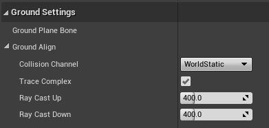

Grounding
Power IK comes with built in grounding ability to contour your creatures to uneven terrain.
Note: This feature is in active development. Procedural leaning and stride adjustment will be available in a future release. The current version is great for creatures with 4 or more limbs, but you will not get proper heel placement in bipeds.

How it Works
Effector's have an IsGrounded flag that causes Power IK to stick the effector to the ground. This is useful for animating feet on uneven terrain.
It helps to understand the basic algorithm for ground alignment:
For each effector that “Is Grounded”:
Calculate effector location in world space
Cast a ray from this location
If ray hits collider:
Smoothly move the effector towards hit point
Run solver using new effector locations
As you can see, because it is based on raycasts, you have to make sure that your collision filtering and level collision is setup to support good ground IK.
How to Setup Grounding
- Create a Power IK Solver node with one effector for each “foot” to be grounded.
- Set Bone Name to the name of the foot bone.
- Leave Space to Relative to Input Pose if you want the normal animation to play over the ground.
- Leave Position and Rotation at zero.
- Check IsGrounded on.
- Compile and Play.
Note: You will likely want to utilize Effector Smoothing when using IsGrounded. Otherwise legs can seemingly "pop" instantly ontop of obstacles.
Grounding Settings

All the Grounding settings are found by selecting the solver node and opening the details panel:
- Ground Plane Bone: the name of the bone that represents the “ground plane” in your animation. Typically this is just the root bone, but you can use a separate bone if you want. The height of the effector relative to this plane is always maintained. So if the animation pulls the characters foot 10cm above the ground plane, then the foot will be 10cm above the ray cast hit location.
- Collision Channel: this is the level collision channel that the rays are collided against. Make sure that the level is setup with collision on this channel for the character to collide with.
- Trace Complex: whether to trace against Complex or Simple collision geometry. Complex is usually preferred, though slightly more expensive.
- Ray Cast Up: the distance in centimeters to cast upwards looking for terrain to stand on.
- Ray Cast Down: the distance in centimeters to cast downwards looking for terrain to stand on.